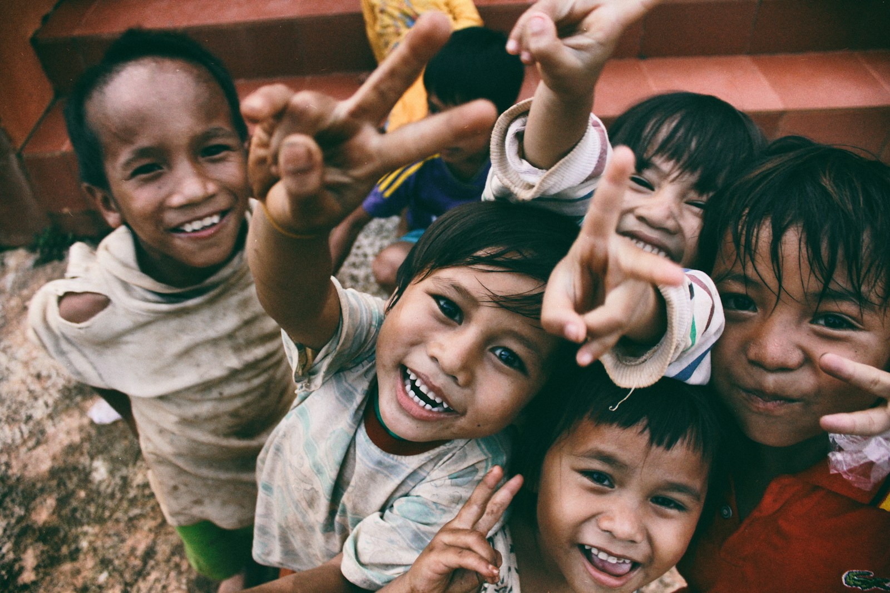

Care starts with listening.
Care & More Charity Foundation exists to serve vulnerable people and help communities build a more secure future.

Our approach
People before projects.
Immediate needs and long-term opportunities belong together. A meal can ease a difficult week; a scholarship can open a path for years to come.